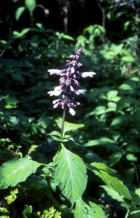
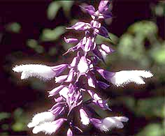

THE BOTANY OF SALVIA DIVINORUM (LABIATAE)Introduction Of the almost 1000 species of Salvia in the world, none has fired the imagination as much as Salvia divinorum Epling & Jativa-M, the enigmatic species ceremoniously employed by the Mazatec Indians of Oaxaca, Mexico. The western world first learned of this salvia, or sage, in 1962, when Epling and J tiva-M described the entity from specimens given to them by Albert Hofmann and Gordon Wasson (Wasson 1962; Hofmann 1980), naming it S. divinorum after its reported use in divination and curing by the Mazatec. Hofmann, the chemist famous for discovering LSD and isolating psylocybin and lysergic acid amides from the mushrooms and morning glories used by the Mazatecs, had explored the Sierra Mazateca that year with Wasson, the self-styled ethnomycologist who pioneered the investigations into the Mazatec rituals. The two criss-crossed the rugged highlands on horseback searching for S. divinorum in the wild, but never were able to locate it. The flowering branches that eventually reached Epling were brought to Hofmann and Wasson by Indians in the village of San Jose Tenango, though no one was willing to take them to a living plant. Wasson (1962), therefore, concluded that S. divinorum is a cultigen that may not exist in the wild state. Because of the aura of secrecy surrounding S. divinorum, the scientific community has not known of this species until recently. A botanist making general collections is not likely to collect S. divinorum because its distribution is highly restricted and its flowering infrequent, thus the few existing collections of this species have all been made in conjuntion with ethnological investigations.  Several aspects concerning this species beg inspection: it has been found growing only in the region inhabited by the Mazatec Indians; no plants have ever been observed to set seed in the wild; and though plants may be found flowering at any time from October until May, they apparently rarely do so. The corolla conformation suggests no clear pollination syndrome and the flowers do not point to any obvious taxonomic affinities within Salvia. These and other questions regarding the biological status of S. divinorum cannot be fully understood without consideration of the magico-divinatory aspects of the species. Although information regarding the Mazatecs is limited, recent interest in these people and their medico-religious approach to healing has shed light on certain facts that may be relevant to the natural history of the species, as the pertinent writings of Wasson and Valdes have elucidated (Wasson 1962, 1963, 1980; Wasson et al. 1974; Wasson & Wasson 1957; Valdes 1983; Valdes et al. 1983; Valdes et al. 1987). |